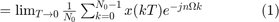
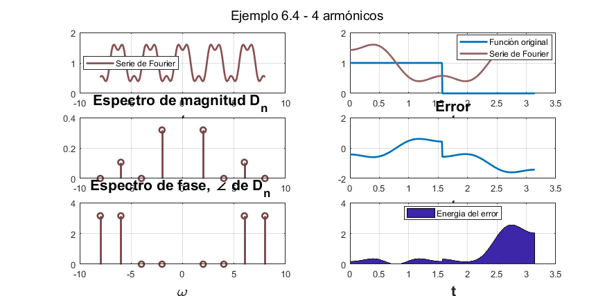

Práctica 5: Series de Fourier en tiempo continuo
Contents
Integrantes
Barrera Bautista Luis Franciso
Pulido Morales Ingrid
Objetivos
- Realizar gráficas de series de Fourier exponenciales y trigonómetricas en tiempo coontinuo
- Manipulación de instrucciones en MATLAB
- Calculo númerico de los coeficientes de Fourier
Introducción
Aproximación Numérica de
Podemos calcular usando el DTF (Transformada Discreta de Fourier), la cual usa las muestras de una señal periódica en un periodo. El intervalo de muestreo es T segundos. Por lo tanto, hay numero de muestras en un periodo . Para encontrar una relación entre y las muestras de , consideramos

Donde es la kth muestra de y
Note que es imposible hacer en la Ec.(1). Podemos hacer pequeña, pero no hacerla cero, lo que causará que los datos se incrementen sin un límite. Entonces, ignoramos el límite en en la Ec. (1) con el argumento de que es razonablemente pequeño. Por lo tanto, podemos expresar la Ec. (1) como:
Ahora, de la Ec.(2), . Por lo tanto, y de la Ec. (3)
La propiedad de periodicidad significa que más allá de , los coeficientes representan los valores para las negativas. Por ejemplo . El ciclo se repite de nuevo en n=32.
Desarrollo
Ejemplo 6.1
Se calculó la Serie de Fourier trigonométrica, popr lo tanto sus coeficientes son
Graficando la serie
- Para 4 armónicos
- Para 15 armónicos
Ejemplo 6.2
Se calculó la Serie de Fourier Exponencial
Graficando la serie
- Para 4 armónicos
- Para 15 armónicos
Ejemplo 6.4
Se calculó la Serie de Fourier Exponencial para la siguiente función
Calculando su
Graficando la Serie
- Para 4 armónicos

- Para 15 armónicos
Ejercicio 6.5

Graficando la serie
- Prara 4 armónicos
- Para 15 armónicos
Ejemplo 6.7
Calculando el con
Graficando la serie
- Para 4 armónicos
Punto 6
Se elaboró un código similar al COMPUTER EXAMPLE C6.2 que se muestra a continuación
t0=-0.5; tf=1.5; t=linspace (t0, tf,1000); x = @(t) 6.*t.*(t>=-0.5 & t<0.5)+6.*(1-t).*(t>=0.5 & t<1.5); t = linspace (-2*pi, 2*pi,1000); y=x(t); sumterms = zeros(16, length(t)); gei Ilinspace(); sumterms(1,:) = 1/2; for n = 1:size(sumterms,1)-1; sumterms(n+1,:) = 24*sin(n*pi/2)*sin(pi*n*t)/(n^2*pi^2); end x_N = cumsum (sumterms); figure(1); clf; ind = 0; for N = [0,1:2:size(sumterms, 1)-1] ind = ind+1; subplot (3,3,ind); plot (t,x_N(N+1,:),t,y,'k--'); axis ([-1 2 -4 4]); xlabel('t'); aux=strcat('x_{',num2str(N),'}'); ylabel(aux); end
Punto 7
Para el ejemplo 6.1 se implementaron el algoritmo de trapecio compuesto y el código COMPUTER EX C6.4 para calcular desde con n=15
Realizando una tabla de comparación
Bibliografía
B. P. Lathi. (2005). Linear Systems and Signals. Oxford, EE. UU.: Oxford University Press. Martinez, M. Rafael. (2018). Series de Fourier para señales continuas. 2018, de Mate y así Sitio web: https://www.youtube.com/user/rafa5131